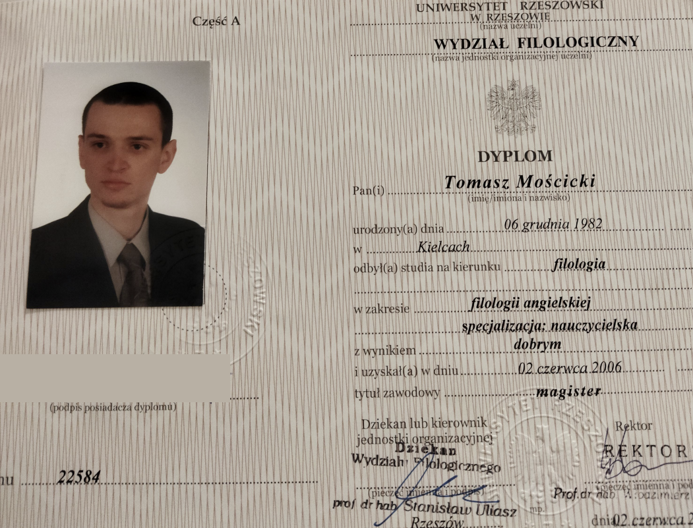
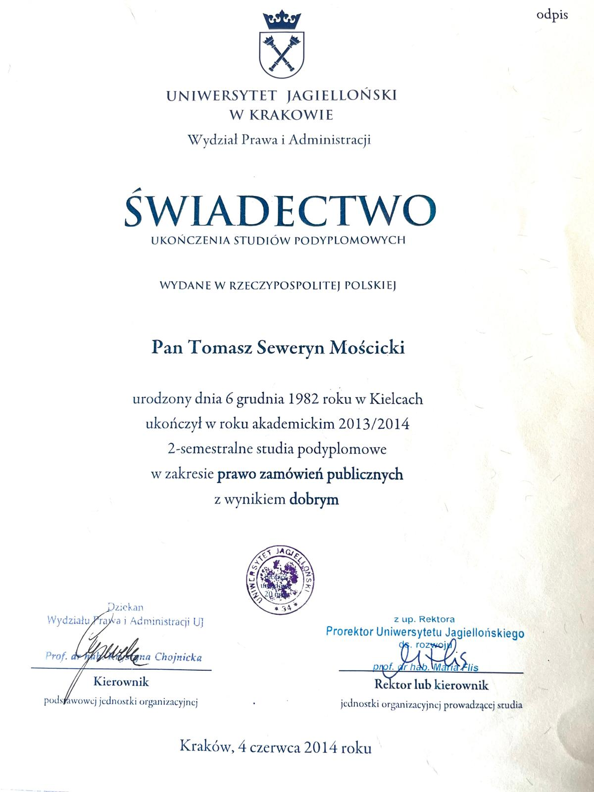

Przejdź do treści
Kielce · stacjonarnie · z dojazdem · online
Angielski, którego używasz w rozmowie— w pracy, w codziennym życiu i na egzaminach. Pomagam przełamać barierę językową. Rozmawiamy, pracujemy nad Twoimi błędami i utrwalamy słowa oraz konstrukcje, których naprawdę potrzebujesz.
Twoje cele
Do czego potrzebujesz angielskiego? 01 Codzienne rozmowy Chcesz zacząć mówić lub mówić swobodniej? Ćwiczymy angielski potrzebny w codziennym życiu, podróżach i rozmowach o tym, co Cię interesuje.
Poznaj sposób pracy → 02 Praca i Twoja branża Spotkania, prezentacje, rozmowy z klientami i specjalistyczne słownictwo. Materiały dobieram do Twoich obowiązków i poziomu.
Zobacz angielski branżowy → 03 Egzaminy Ósmoklasista, matura, B2 First i TOLES. Pracujemy nad językiem oraz zadaniami właściwymi dla wybranego egzaminu.
Zobacz przygotowanie → Mój sposób pracy
Pracujemy z indywidualnie dobranymi materiałami lub podręcznikiem 01 Rozmawiamy O Twoim życiu, pracy i zainteresowaniach. Spokojnie poprawiam błędy i dyskretnie notuję trudniejsze słowa oraz konstrukcje.
02 Wracamy do trudności Pod koniec zajęć ponownie ćwiczymy zapisane elementy. Najważniejsze słowa i zdania trafiają do aplikacji do powtórek.
03 Utrwalamy w praktyce Przypominasz sobie materiał w odstępach czasu. Na kolejnych lekcjach używamy go ponownie w nowych rozmowach.
Ćwiczymy aktywne przypominanie, stosujemy powtórki rozłożone w czasie i mnemotechniki. Skupiamy się na często używanych słowach i konstrukcjach oraz języku potrzebnym Tobie.
Poznaj szczegóły metody Zajrzyj na zajęcia
Zobacz, jak Fragment przykładowej lekcji pozwoli Ci poznać tempo pracy i sposób prowadzenia rozmowy.
Zwróć uwagę na sposób poprawiania błędów i pracę nad wypowiedzią ucznia.
Porozmawiajmy o Twoich celach → Twoja przeglądarka nie obsługuje odtwarzania wideo.
Dlaczego warto ze mną współpracować
Doświadczenie Ponad 15 lat doświadczenia w nauczaniu języka angielskiego oraz 3 lata życia i pracy w Wielkiej Brytanii.
Zobacz doświadczenie → Wykształcenie Magister filologii angielskiej — Uniwersytet Rzeszowski.
Studia podyplomowe z prawa zamówień publicznych – Uniwersytet Jagielloński.
Zobacz dyplom magisterski → Zobacz dyplom UJ → Angielski dopasowany do Twojej branży Specjalistyczne zajęcia oparte na sytuacjach, z którymi spotykasz się w pracy. Materiały dobieram indywidualnie dla każdej osoby — do jej poziomu, obowiązków i celów.
Prawo Legal English, umowy, korespondencja, rozmowy z klientami i słownictwo potrzebne w codziennej pracy prawnika.
Księgowość Terminologia księgowa, omawianie danych finansowych i komunikacja z klientami oraz współpracownikami.
Sprzedaż Rozmowy handlowe, prezentowanie oferty, negocjacje i odpowiadanie na pytania klientów.
Farmacja Specjalistyczne słownictwo, praca z tekstami branżowymi i komunikacja zawodowa dopasowana do Twojej roli.
IT Omawianie projektów, spotkania zespołu i komunikacja z klientami. Angielski dopasowany do Twojej pracy w technologii.
Doświadczenie w praktyce
Prowadziłem zajęcia m.in. dla programistów Comarch, pracowników działu IT North Fish oraz prawników i kadry zarządzającej PCWO.
Zobacz pełne doświadczenie i referencje → Przygotowanie do egzaminów Ósmoklasista Angielski w szkole — przygotowanie dopasowane do wybranego egzaminu.
Poznaj szczegóły → B2 First Dawniej FCE. Przygotowanie językowe i praca z zadaniami egzaminacyjnymi.
Poznaj szczegóły → TOLES Język prawa i przygotowanie do egzaminu dla osób rozwijających kompetencje zawodowe.
Poznaj szczegóły → × Praktyka lektorska
Moje doświadczenie Od zajęć szkolnych po angielski dla kadry zarządzającej, prawników i specjalistów. Poniżej przedstawiam wybrane miejsca, w których prowadziłem zajęcia.
Angielski w codziennym życiu
3 lata mieszkania i pracy w Wielkiej Brytanii Mieszkałem i pracowałem w Bristolu, korzystając z angielskiego w życiu codziennym i zawodowym. W HBOS Financial Services zajmowałem się obsługą klienta i nadzorem nad korespondencją. To doświadczenie uzupełnia moją praktykę lektorską o znajomość komunikacji w brytyjskim środowisku pracy.
Firmy i klienci biznesowi VIII 2018 – V 2019 · Kielce PCWO S.A. Zajęcia dla prawników, dyrektora finansowego, prezesa i specjalistów.
VI 2018 – X 2019 North Fish S.A. Angielski biznesowy dla pracowników działu IT.
X 2016 – VIII 2017 · Kielce Comarch S.A. Zajęcia z języka angielskiego dla programistów.
XII 2016 – IV 2018 Novartis S.A. — przez Skrivanek Angielski biznesowy dla firmy Novartis w ramach współpracy ze Skrivanek sp. z o.o.
III 2018 – X 2018 · Kielce Kolporter — przez Advantis Zajęcia dla firmy Kolporter w ramach współpracy z Advantis s.c.
I 2015 – XII 2017 · Kielce Lang LTC sp. z o.o. Angielski biznesowy dla różnych firm.
X 2018 – II 2019 · Kielce BCO Biuro Doradztwa Biznesowego sp. j. Zajęcia dla dorosłych w ramach projektu unijnego.
Szkoły, młodzież i projekty edukacyjne + Kielce · rozpoczęcie współpracy: IX 2020 English House Zajęcia dla młodzieży oraz angielski biznesowy.
X 2019 – VI 2020 Szkoła Podstawowa w Koniecznie Dodatkowe zajęcia z języka angielskiego dla klas I–VI.
III – VI 2015 · Kielce Powiatowe Centrum Pomocy Rodzinie Język angielski dla młodzieży z trudnościami w nauce.
IV – XI 2014 Technikum Hotelarskie w Wieliczce Nauczanie języka angielskiego w ramach projektu unijnego.
IX 2010 – VI 2013 · Kraków Szkoła Podstawowa nr 45 im. Pauli Montal Sióstr Pijarek Nauczanie języka angielskiego w klasach I–VI.
X 2004 – VI 2006 · Kielce Szkoła Podstawowa nr 19 Nauczanie języka angielskiego w klasach I–VI.
IX 2004 – VI 2005 · Kielce Akademia Sukcesu Praca jako nauczyciel języka angielskiego.
I – XII 2004 Rzeczycki & Majtyka Top English School Nauczanie języka angielskiego metodą Callana.
Referencje szkół i firm Dokumenty potwierdzające współpracę z placówkami i klientami.
Zobacz referencje · PDF → × Dokumenty do wglądu
Referencje szkół i firm Trzy oryginalne dokumenty potwierdzające wcześniejszą pracę lektorską i nauczycielską.
Otwórz cały dokument PDF → Dokumenty są udostępnione wyłącznie jako potwierdzenie doświadczenia zawodowego.
× Wykształcenie
Dyplom ukończenia studiów Uniwersytet Rzeszowski · filologia angielska · specjalizacja nauczycielska · tytuł magistra · 2 czerwca 2006 r.

Na publikowanej kopii zasłonięto wyłącznie odręczny podpis posiadacza dyplomu.
× Wykształcenie
Studia podyplomowe — Uniwersytet Jagielloński Wydział Prawa i Administracji · prawo zamówień publicznych · 4 czerwca 2014 r.

× Sposób pracy
Od rozmowy do swobodnego mówienia Jak wygląda praca na lekcji Rozmawiamy od początku Większość zajęć odbywa się poprzez naturalną rozmowę na tematy związane z Twoim życiem, pracą i zainteresowaniami.
Poprawiam błędy od razu Kiedy pojawia się błąd, poprawiam go na bieżąco — spokojnie i naturalnie, tak żeby nie przerywać toku rozmowy.
Dyskretnie zapisuję to, co sprawia Ci problem W trakcie rozmowy notuję błędy, brakujące słowa i konstrukcje, do których warto później wrócić.
Wracamy do nich pod koniec lekcji Na końcu zajęć ponownie ćwiczymy problematyczne elementy, aż potrafisz użyć ich poprawnie.
Najważniejszy materiał trafia do aplikacji Słowa, konstrukcje i zdania dodajemy do systemu powtórek opartego na aktywnym przypominaniu i powtórkach rozłożonych w czasie.
Używasz ich ponownie w kolejnych rozmowach Nie chodzi o jednorazowe „przerobienie” materiału. Wracamy do niego na kolejnych zajęciach i wykorzystujemy go w nowych sytuacjach, aż zaczynasz używać go automatycznie.
W ten sposób uczysz się przede wszystkim słów i konstrukcji, których rzeczywiście potrzebujesz do mówienia — zamiast zapamiętywać przypadkowe listy słownictwa.
Przykład zajęć
Omawianie raportu finansowego firmy Zaczynam od znalezienia przykładowego dokumentu, przeanalizowania go i dobrania odpowiednich sformułowań, struktur oraz słownictwa.
Przygotowany materiał udostępniam Ci w aplikacji do samodzielnych powtórek. Następnie wspólnie ćwiczymy jego użycie na zajęciach i wykorzystujemy go w konkretnej scence — prezentacji lub omówieniu raportu.
Podczas ćwiczenia notuję błędy, nad którymi później pracujemy, aż do poprawnego użycia ćwiczonych sformułowań. Na kolejnych zajęciach, przed przejściem do nowych tematów, wracamy również do wcześniej poznanego materiału.
× Egzaminy szkolne
Egzamin ósmoklasisty i matura Przygotowanie z języka angielskiego dopasowane do wybranego egzaminu, obecnego poziomu i czasu pozostałego do jego terminu.
Egzamin ósmoklasisty Praca z zadaniami egzaminacyjnymi, utrwalanie słownictwa i gramatyki oraz rozwijanie umiejętności rozumienia i pisania.
Matura Plan pracy ustalimy z uwzględnieniem wybranego poziomu i części egzaminu, do których chcesz się przygotować.
Na pierwszą rozmowę przygotuj informację o egzaminie, jego terminie i swoich największych trudnościach.
Porozmawiajmy o przygotowaniu → × Egzamin językowy
B2 First — dawniej FCE Połączymy rozwijanie umiejętności językowych z ćwiczeniem zadań i oswajaniem formatu egzaminu.
Język i zadania egzaminacyjne Praca nad rozumieniem, pisaniem, mówieniem oraz poprawnością językową, z uwzględnieniem Twoich mocnych i słabszych stron.
Plan dopasowany do Ciebie Ustalimy punkt wyjścia, termin egzaminu i obszary wymagające najwięcej uwagi.
Porozmawiajmy o przygotowaniu → × Angielski prawniczy
Przygotowanie do TOLES Oferta dla osób, które chcą rozwijać angielski prawniczy i przygotować się do egzaminu TOLES.
Precyzja języka prawa Praca z terminologią i tekstami prawniczymi oraz zadaniami dobranymi do wybranego egzaminu.
Zakres przygotowania Podczas rozmowy ustalimy wybrany poziom egzaminu, Twoje doświadczenie z językiem prawniczym i plan nauki.
Porozmawiajmy o przygotowaniu →